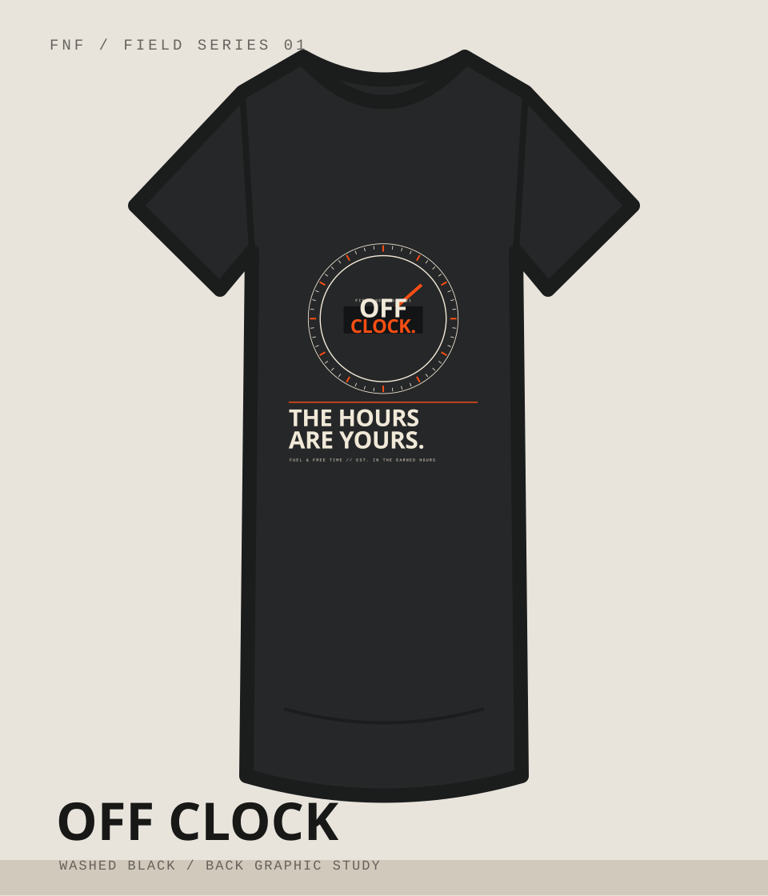
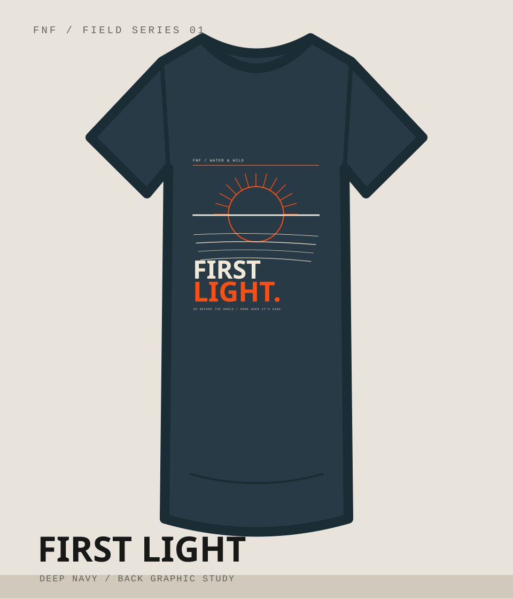
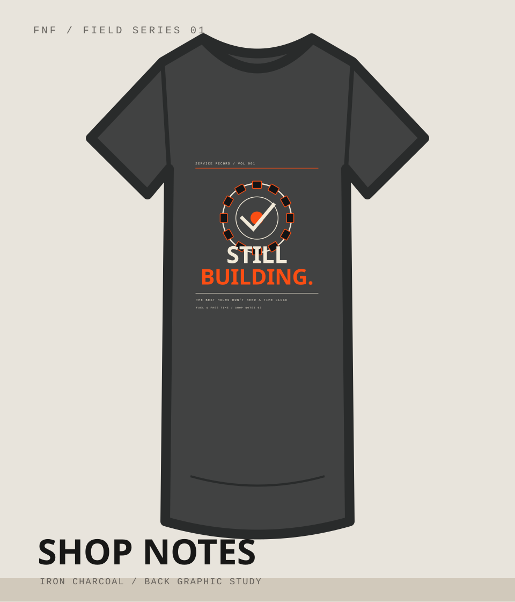
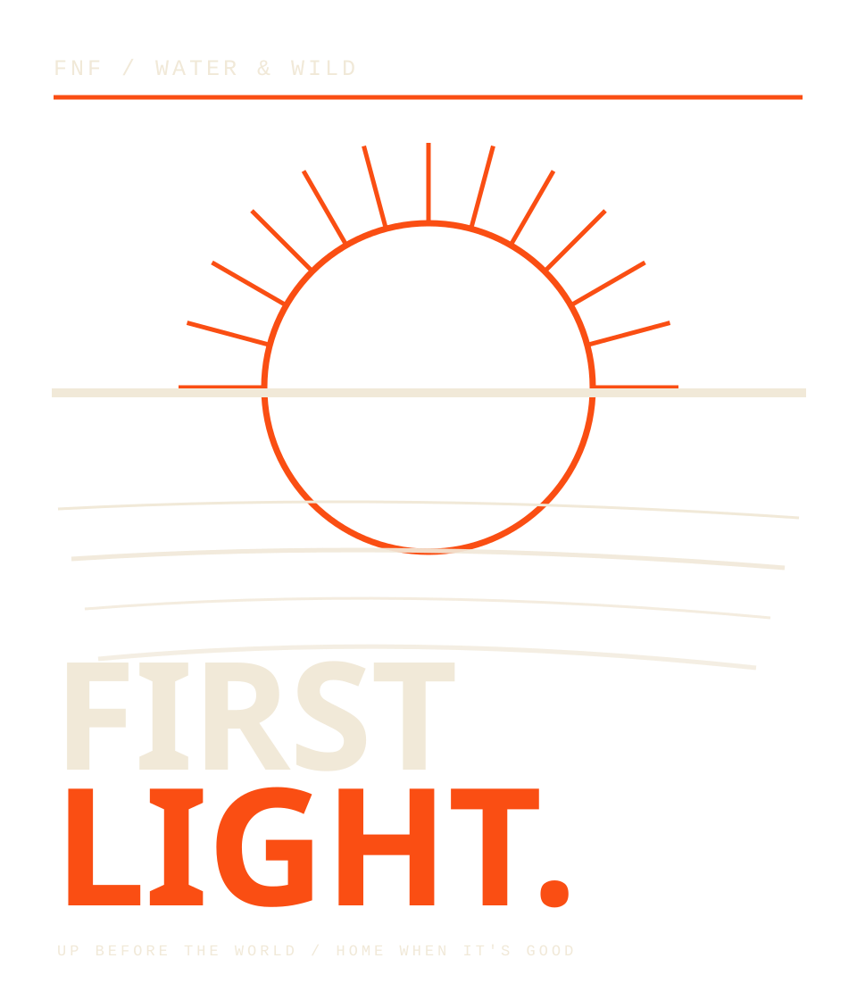
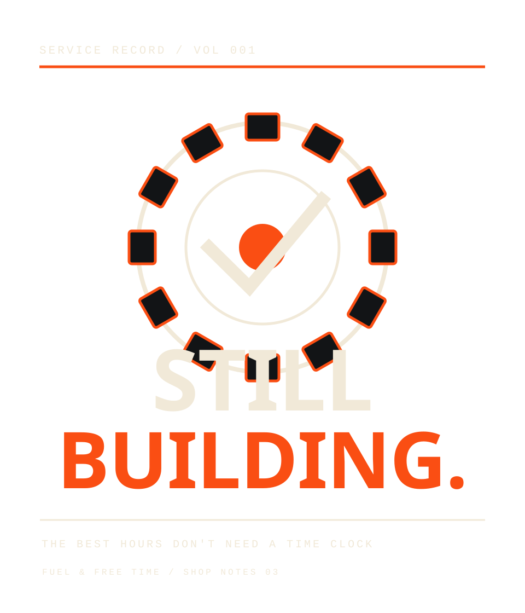

01 / OFF CLOCK
Timepiece language, crisp ring geometry, signal-orange needle.
Three ways to spend the time that belongs to you. One collection built around the people, places, and machines that make the hours count.
An honest first capsule with a small mark up front and something worth looking at on the back. Three stories connected by a simple idea: work buys the hours, but how you spend them is what gives those hours meaning.

The minute hand moves differently when the day belongs to you.
A tachometer reinterpreted as a timepiece. The artwork says it without shouting: the real horsepower isn't under the hood. It's in the hours you get to use.

Some mornings are worth getting up for.
The moment before the first cast or first turn of the key. A rising sun, long horizon and clean water lines give the story its own graphic language without borrowing somebody else's fishing-company aesthetic.

Some projects are never really finished.
A graphic study built from old inspection plates, workshop typography and mechanical geometry. For the garage lights still burning, the friends who stop by and the build that somehow always needs one more night.
Front and back graphics are separate editable SVG sources. Design studies are not manufacturing proofs: outlined text, final blank, colorways, print dimensions, DPI and provider sample validation still come before activation.

Timepiece language, crisp ring geometry, signal-orange needle.

Low horizon, warm solar arc, layered wake contours.

Industrial rotor illustration, service-record typography, steel-stamp composition.